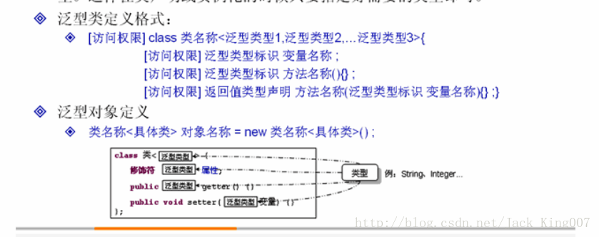
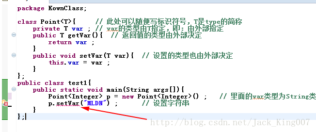
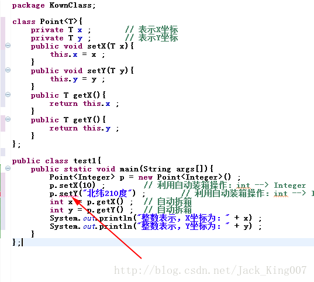
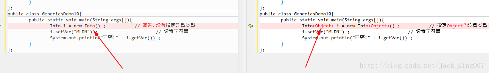
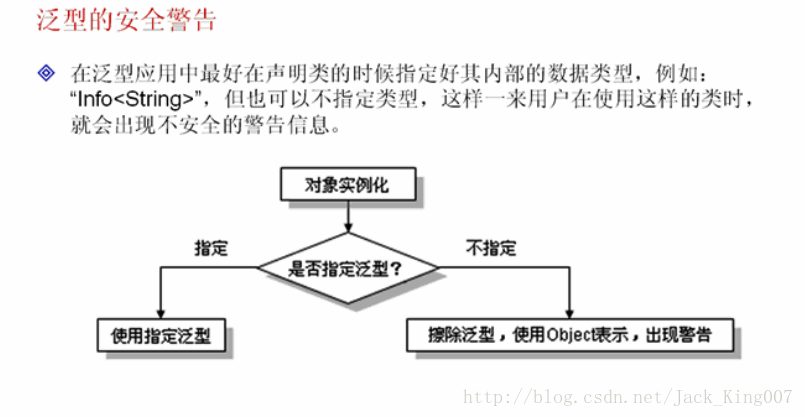

java15高新知识之泛型（1）
（1）泛型产生的意义
在这样的程序里减少了类型转换的代码 而且更加安全 如果你设置的不是数字的 则会出现编译错误
（3）设置多个多个泛型
（4）泛型的安全警告
也可以说此时var型就是Object所有泛型信息将被擦除
我使用工具让大家区别在哪里
泛型可以解决数据类型的安全性问题，它主要的原理是类声明的时候通过一个标示表示类中某个属性的类型或者是某个方法的返回值的参数类型，这样在类声明或实例化的时候只要指定好的类型即可

按照此格式写一个类
package KownClass;
class Point<T>{ // 此处可以随便写标识符号，T是type的简称
private T var ; // var的类型由T指定，即：由外部指定
public T getVar(){ // 返回值的类型由外部决定
return var ;
}
public void setVar(T var){ // 设置的类型也由外部决定
this.var = var ;
}
};
public class test1{
public static void main(String args[]){
Point<String> p = new Point<String>() ; // 里面的var类型为String类型
p.setVar("MLDN") ; // 设置字符串
System.out.println(p.getVar().length()) ; // 取得字符串的长度
}
};泛型有一个好处就是你在前面的类不需要I指定数据类型，在外不指定就行了，同时也就避免了转型的错误
如 Point<String> p=new Point<String>(); 其中<String> 就指定了数据类型了
但是要注意的是 如果设置内容与指定的泛型不一致就会编译错误

同时也可以更好的保护数据 直接在setter 里面加入泛型
package KownClass;
class Point<T>{
private T x ; // 表示X坐标
private T y ; // 表示Y坐标
public void setX(T x){
this.x = x ;
}
public void setY(T y){
this.y = y ;
}
public T getX(){
return this.x ;
}
public T getY(){
return this.y ;
}
};
public class test1{
public static void main(String args[]){
Point<Integer> p = new Point<Integer>() ;
p.setX(10) ; // 利用自动装箱操作：int --> Integer
p.setY(20) ; // 利用自动装箱操作：int --> Integer
int x = p.getX() ; // 自动拆箱
int y = p.getY() ; // 自动拆箱
System.out.println("整数表示，X坐标为：" + x) ;
System.out.println("整数表示，Y坐标为：" + y) ;
}
};在这样的程序里减少了类型转换的代码 而且更加安全 如果你设置的不是数字的 则会出现编译错误

泛型也可以在构造方法中使用，一般有可能使用构造方法为类中的属性赋值
(2)构造方法中使用泛型
package KownClass;
class Point<T>{ // 此处可以随便写标识符号，T是type的简称
private T var ; // var的类型由T指定，即：由外部指定
public Point(T var){ // 通过构造方法设置内容
this.var = var ;
}
public T getVar(){ // 返回值的类型由外部决定
return var ;
}
public void setVar(T var){ // 设置的类型也由外部决定
this.var = var ;
}
};
public class test1{
public static void main(String args[]){
Point<String> p = new Point<String>("MLDN") ; // 里面的var类型为String类型
System.out.println("内容：" + p.getVar()) ;
}
};（3）设置多个多个泛型
一个
Point<String> p = new Point<String>("MLDN") ;
// 里面的var类型为String类型
多个
Notepad<String,Integer> t = null ;
// 定义两个泛型类型的对象
class Notepad<K,V>{ // 此处指定了两个泛型类型
private K key ; // 此变量的类型由外部决定
private V value ; // 此变量的类型由外部决定
public K getKey(){
return this.key ;
}
public V getValue(){
return this.value ;
}
public void setKey(K key){
this.key = key ;
}
public void setValue(V value){
this.value = value ;
}
};
public class GenericsDemo09{
public static void main(String args[]){
Notepad<String,Integer> t = null ; // 定义两个泛型类型的对象
t = new Notepad<String,Integer>() ; // 里面的key为String，value为Integer
t.setKey("李兴华") ; // 设置第一个内容
t.setValue(30) ; // 设置第二个内容
System.out.print("姓名；" + t.getKey()) ; // 取得信息
System.out.print("，年龄；" + t.getValue()) ; // 取得信息
}
};（4）泛型的安全警告
在泛型引用中最好在声明类对象的时候指定好其内部的数据内型 例如"Info<String>"但也可以不指定类型虽然可以执行但是java为了保证程序依旧可以使用 会将T设置成Object类型 这样一来就可以接受任何数据类型
也可以说此时var型就是Object所有泛型信息将被擦除
其实就相当于下面代码
class Info<T>{
private T var ;
public T getVar(){
return this.var ;
}
public void setVar(T var){
this.var = var ;
}
public String toString(){ // 覆写Object类中的toString()方法
return this.var.toString() ;
}
};
public class GenericsDemo11{
public static void main(String args[]){
Info<Object> i = new Info<Object>() ; // 指定Object为泛型类型
i.setVar("MLDN") ; // 设置字符串
System.out.println("内容：" + i.getVar()) ;
}
};我使用工具让大家区别在哪里

